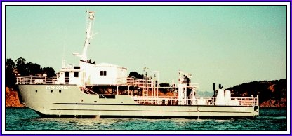
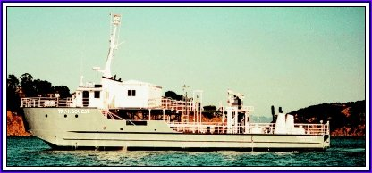

Information about the Research Vessel Transquest


See us on YouTube!
Information about the Research Vessel Transquest


See us on YouTube!
| R/V Transquest
is a submersible launch platform for:
ocean research, dive support, or treasure hunting! The former flagship of the Lockheed Corporation's Ocean Research Division, this vessel is a twin diesel screw, 1967 Oceanographic SURFAC support ship with twin transom design. She will accommodate submarines up to 50' long and 50 tons. Transquest is a solid, well equipped and well maintained vessel that has been at the forefront of submersible activity. She served as the mothership of Lockheed's "DeepQuest" submarine then went on to 20 years of classified service with U.S. Navy Deep Submergence Rescue Vehicles (DSRVs) including Mystic, Sea Cliff, Turtle and Avalon.
|
|
Ship Specifications Auxiliary Equipment: |
Historical Photos in Action Events:
News:
|

For immediate information, contact
Case Blazyk
phone or fax: 970-769-5801
email: caseblazyk@hotmail.com
mail: P.O. Box 333, Sausalito, CA 94966

Last Update: January 2013
/ Hosted by Pennyworth
Web site developed by Sarah
Rodger, Transquest Crew
Contact our Webmaster